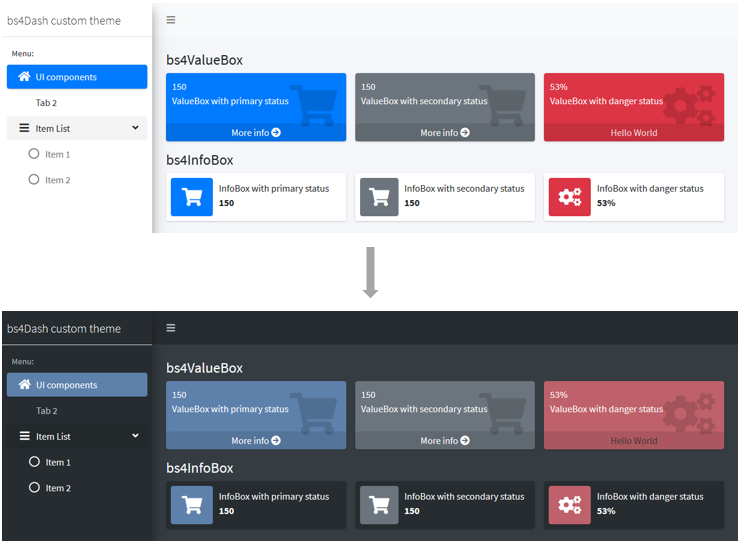

Create fresh themes for use in {shiny}, {shinydashboard} and {bs4Dash} applications and {flexdashboard} documents.
Installation
You can install stable version from CRAN with:
install.packages("fresh")You can install the development version of fresh from GitHub with:
remotes::install_github("dreamRs/fresh")shiny
Create new themes to use in shiny applications with fluidPage or navbarPage. From the default theme :

Obtain this :

This theme was creating with following code:
create_theme(
theme = "default",
bs_vars_navbar(
default_bg = "#3f2d54",
default_color = "#FFFFFF",
default_link_color = "#FFFFFF",
default_link_active_color = "#FFFFFF"
),
bs_vars_color(
gray_base = "#354e5c",
brand_primary = "#75b8d1",
brand_success = "#c9d175",
brand_info = "#758bd1",
brand_warning = "#d1ab75",
brand_danger = "#d175b8"
),
bs_vars_state(
success_text = "#FFF",
success_bg = "#c9d175",
success_border = "#c9d175",
info_text = "#FFF",
info_bg = "#3f2d54",
info_border = "#3f2d54",
danger_text = "#FFF",
danger_bg = "#d175b8",
danger_border = "#d175b8"
),
bs_vars_wells(
bg = "#FFF",
border = "#3f2d54"
),
output_file = "www/mytheme.css"
)Use the created theme like this:
navbarPage(
title = "My application",
theme = "mytheme.css",
...
)shinydashboard
Customize colors and other settings used in {shinydashboard} applications :

Create the theme:
mytheme <- create_theme(
adminlte_color(
light_blue = "#434C5E"
),
adminlte_sidebar(
width = "400px",
dark_bg = "#D8DEE9",
dark_hover_bg = "#81A1C1",
dark_color = "#2E3440"
),
adminlte_global(
content_bg = "#FFF",
box_bg = "#D8DEE9",
info_box_bg = "#D8DEE9"
)
)Use your theme:
dashboardPage(
header = dashboardHeader(title = "My dashboard"),
sidebar = dashboardSidebar(
# ...
),
body = dashboardBody(
use_theme(mytheme), # <-- use the theme
# ...
)
)See more information here: Variables for {shinydashboard} or in R console: vignette("vars-shinydashboard", package = "fresh").
bs4Dash
Create a theme to personalize your {bs4Dash} applications:

Create the theme:
mytheme <- create_theme(
bs4dash_vars(
navbar_light_color = "#bec5cb",
navbar_light_active_color = "#FFF",
navbar_light_hover_color = "#FFF"
),
bs4dash_yiq(
contrasted_threshold = 10,
text_dark = "#FFF",
text_light = "#272c30"
),
bs4dash_layout(
main_bg = "#353c42"
),
bs4dash_sidebar_light(
bg = "#272c30",
color = "#bec5cb",
hover_color = "#FFF",
submenu_bg = "#272c30",
submenu_color = "#FFF",
submenu_hover_color = "#FFF"
),
bs4dash_status(
primary = "#5E81AC", danger = "#BF616A", light = "#272c30"
),
bs4dash_color(
gray_900 = "#FFF"
)
)Use your theme:
bs4DashPage(
title = "bs4Dash custom theme",
navbar = bs4DashNavbar(skin = "light"),
sidebar = bs4DashSidebar(
title = "bs4Dash custom theme",
skin = "light",
# ...
),
body = bs4DashBody(
use_theme(mytheme), # <-- use the theme
# ...
)
)See more information here: Variables for {bs4dash} or in R console: vignette("vars-bs4dash", package = "fresh").
 Victor Perrier
Victor Perrier Fanny Meyer
Fanny Meyer